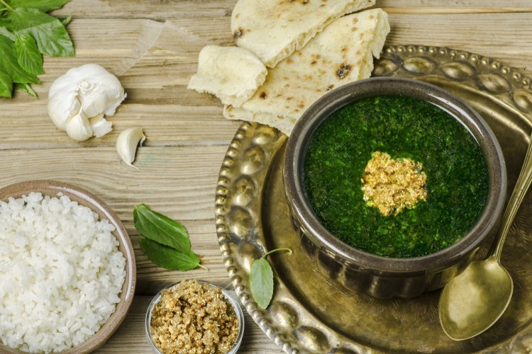

MoloKhia
Molokhia is a traditional Egyptian dish made from the leaves of the jute plant. Its history goes
back to ancient
Egypt,
where itwas considered a royal dish. People in Egypt and other parts of the Middle East have enjoyed
it
for
centuries.
Molokhia is known for its green, slightly slimy texture and is usually served with rice or bread,
often
accompanied by
chicken, rabbit, or beef. It is rich in vitamins and minerals and is considered both
delicious and
healthy.

Ingredients
- 1 bunch of fresh molokhia leaves (or 400g frozen)
- 1 whole chicken or 500g chicken pieces
- 6 cups of water
- 1 onion, chopped
- 6 garlic cloves, minced
- 2 tablespoons of olive oil or butter
- 1 teaspoon ground coriander
- Salt and pepper to taste
- Rice or bread to serve+
cooking Steps
- Boil the chicken in water with the chopped onion, salt, and pepper until fully cooked.
- Remove the chicken and shred it, then keep the broth.
- Wash and chop molokhia leaves finely (or thaw frozen leaves).
- In a pan, heat olive oil or butter, add minced garlic and ground coriander, and fry until fragrant.
- Add the chopped molokhia to the broth and stir while cooking for a few minutes.
- Serve the molokhia hot with shredded chicken on top and rice or bread on the side.
Garlic
p Minced and fried to add flavor to the dish
Coriander
A spice that gives molokhia its unique taste
Olive Oil
Used for sautéing garlic and spices
for more details click here
Molokhia is not only tasty but also packed with nutrients, making it a healthy choice for any meal
CH 4+2o 2 -> CO 2+ 2H 2O
Calculate the value of:
3 2-2 4+6 3